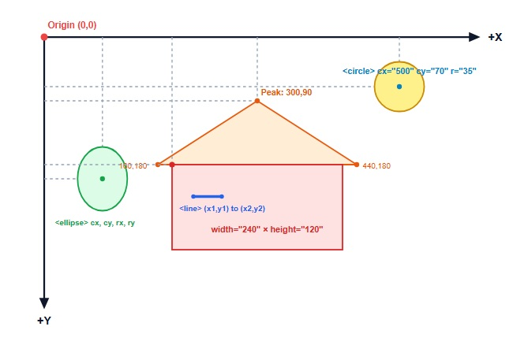

Household Energy Consumption in Australia
With rising residential electricity tariffs across the National Electricity Market (NEM), managing household consumption starts with understanding major appliances. While heating and cooling account for the largest seasonal spikes, continuous entertainment displays and standby electronics generate significant baseline power draw.
Size Matters Most
Across television displays, screen surface area dictates energy draw exponentially more than brand or feature set. Moving from a medium to large screen nearly doubles consumption.
Market Clustering
Australian TV models cluster tightly around 55-inch and 65-inch panels, which sit right at the inflection point where power demands ramp up sharply.
Panel Efficiency Shifts
Display technology (OLED vs LCD vs LED) creates distinct consumption profiles across different form factors, making technology selection critical for long-term running costs.
Navigating Australia's Energy Rating Framework
The Australian Government's Energy Rating Label requires suppliers to disclose both comparative star ratings and estimated annual kilowatt-hour (kWh) consumption. This allows consumers to benchmark the lifetime operational cost of consumer electronics against the initial retail price tag.
Explore our dedicated Televisions Exploration page for empirical analysis on screen distributions, power scaling, and panel efficiency.
Estimate Your Appliance Running Cost
Calculate running costs using current Australian electricity tariffs (default set to 30¢/kWh):
Frequently Asked Questions
The Energy Rating Label indicates an appliance's energy efficiency using a star rating system. More stars reflect greater relative efficiency compared to other models of equivalent capacity or screen area.
Labelled consumption uses standardised Australian testing profiles (e.g., AS/NZS standards for TVs specify power consumption in On Mode based on default factory settings for 10 hours daily, plus standby modes).
Because screen area scales quadratically relative to diagonal inches, backlighting or self-emissive subpixels require substantially more continuous wattage to illuminate large surface panels.
Exercise 4.1: Draw SVGs
Step 1: Create a picture with SVG shapes
Step 2: Become familiar with the SVG coordinate system
